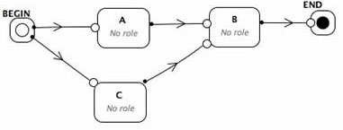

    A <i>Petri node</i> can have several preconditions, represented by small 
    circles in Flexo. Only one precondition needs to be met in order to fire a <i>Petri 
    node</i>.<br><br><br><br><br><br>
  
